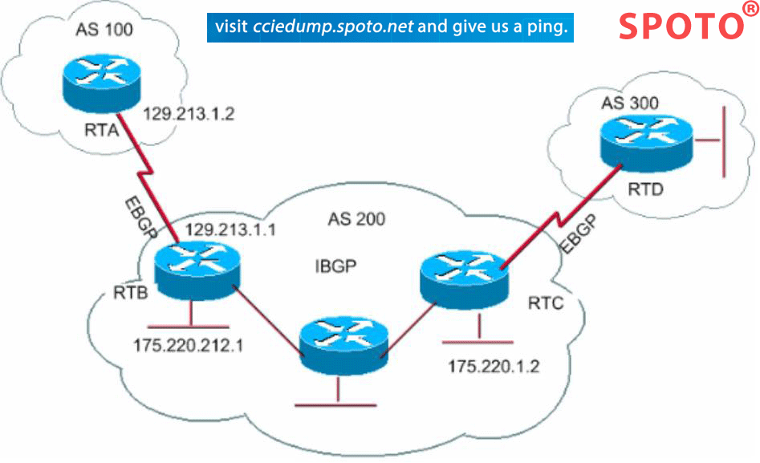

Homepage
Menu
Change
ADVANCED NETWORKS
INTERNET NETWORK LAYER
BGP: the Exterior Gateway routing protocol
What is?
Border Gateway Protocol (BGP) is a standardized exterior gateway protocol designed to exchange routing and reachability information among autonomous systems (AS) on the Internet.[1] BGP is classified as a path-vector routing protocol,[2] and it makes routing decisions based on paths, network policies, or rule-sets configured by a network administrator. BGP used for routing within an autonomous system is called Interior Border Gateway Protocol, Internal BGP (iBGP). In contrast, the Internet application of the protocol is called Exterior Border Gateway Protocol, External BGP (eBGP).

The Border Gateway Protocol (BGP) is one of a family of IP Routing protocols, and is an Exterior Gateway Protocol (EGP) designed to distribute routing information between ASs. EGPs are all vector routing protocols. In a vectoring protocol like BGP, the routers exchange network reachability information with their nearest neighbors. In other words, the routers communicate to each other the sets of addresses ("address prefixes") that they can reach, and the next hop address to which data should be sent in order to reach those addresses. This contrasts with link-state IGPs; the EGP routers exchange routes with one another, whereas the IGP routers exchange topology information and calculate their own routes locally. The EGP floods reachability information through the Internet, so that every EGP router has a routing table containing address prefixes and next hops that cover the entire public Internet. The EGP has little or no knowledge of the end-to-end route; it only knows about the next hop along the route. Hence, the path along which data is forwarded is chosen based on a comparison of all available next hops. Vector routing protocols scale much better than link-state routing protocols because the time taken to determine the best next hop is not a function of the number of nodes in the network, which makes them suitable for routing traffic on the backbone of the Internet. An individual AS that wants to exchange routing information with other ASs will typically contain one or more BGP routers. Each BGP router is configured with the addresses of the BGP peers with which it is to exchange routing information. When a connection to a peer is established, a BGP router sends all the routes in its local BGP routing table to that peer using UPDATE messages. The peer uses the contents of these messages to add new routes to its own local BGP routing table. If a BGP speaker learns more than one route to the same set of destinations, it runs a decision process over the competing routes to decide which is the most preferable. The most preferable route is then installed in the local BGP routing table, and is advertised to other BGP peers.